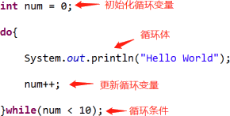
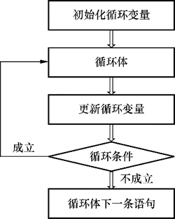
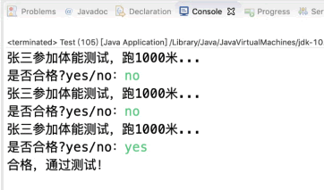

首页 > 编程笔记
Java do while循环语句的用法
在 Java 中，do while 循环和 while 循环很类似，区别在于 do while 循环会先执行一次循环体，再做判断，而 while 循环必须先判断，再决定是否执行循环体。如果循环条件不成立，do while 循环会执行一次循环体，while 循环一次都不会执行。
do while 循环语句的基本语法如下：
所以我们在写循环时，需要额外添加控制循环条件的代码，这部分代码和循环本身组成了循环四要素，这是很重要的知识点，它描述了循环的本质，循环四要素如下：
一段完整的循环代码，四要素缺一不可。
例如，使用 do while 循环来实现重复打印 10 次“Hello World”的需求，代码如下。
do while循环是先执行后判断，顺序如下图所示。
【实例】张三参加体能测试1000米跑，如果成绩不合格，则继续测试，直到合格为止，使用循环来实现这一场景。
do while 循环语句的基本语法如下：
do{
//循环体
}while(循环条件)
当循环条件成立时，会重复执行循环体中的代码，直到条件不成立。那么很显然，我们应该在循环体中动态控制循环条件是否成立，否则就形成了死循环。循环条件始终成立导致循环体一直执行，不会停止。所以我们在写循环时，需要额外添加控制循环条件的代码，这部分代码和循环本身组成了循环四要素，这是很重要的知识点，它描述了循环的本质，循环四要素如下：
- 初始化循环变量；
- 循环条件；
- 循环体；
- 更新循环变量。
一段完整的循环代码，四要素缺一不可。
例如，使用 do while 循环来实现重复打印 10 次“Hello World”的需求，代码如下。
public class Test {
public static void main(String[] args) {
int num = 0;
do{
System.out.println("Hello World");
num++;
}while(num < 10);
}
}
对上述代码进行分析，循环四要素如下图所示。

do while循环是先执行后判断，顺序如下图所示。

【实例】张三参加体能测试1000米跑，如果成绩不合格，则继续测试，直到合格为止，使用循环来实现这一场景。
import java.util.Scanner;
public class Test {
public static void main(String[] args) {
Scanner scanner = new Scanner(System.in);
String str;
do{
System.out.println("张三参加体能测试，跑1000米...");
System.out.print("是否合格?yes/no：");
str = scanner.next();
}while(str.equals("no"));
System.out.println("合格，通过测试！");
}
}
运行结果如下图所示。

关注公众号「站长严长生」，在手机上阅读所有教程，随时随地都能学习。内含一款搜索神器，免费下载全网书籍和视频。

微信扫码关注公众号